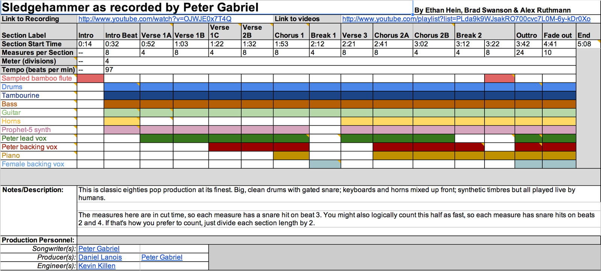

Overview
In this module, you'll be introduced to techniques for how to listen for musical structure over time in a recording. We'll build on the perceived space graph from Module 2, where you identified sound sources and placed them in perceived space, by having you listen for the big picture musical structure (song sections and form), the musical texture (when sounds enter and leave the mix/arrangement and the arrangement's musical density). We'll also lead you through counting bars and beats, determining meter and tempo, and place chord changes if you so desire.
We've divided this module into 4 sections:
- A. Project: Listening for musical structure in Peter Gabriel's Sledgehammer
- B. Video: Phil Galdston: On songwriting
- C. Project: Analyze your favorite tune and share it with your Crew and the PWYM community
- D. Other People's Good Ideas
This module ends with you creating a PWYM Musical Structure Graph [link withheld] for a musical recording you love. We encourage you to find other PWYM participants (your crew!) to share your graph, and to give feedback to others on their graphs.
Project 1: Learning to Listen for Musical Structure
We've invited our colleague Ethan Hein [link withheld] to share with you a process of listening for musical structures within music recordings. For this video, Ethan will walk you through our approach to listening critically within Peter Gabriel [link withheld]’s song Sledgehammer [link withheld].
Getting Started
LISTENING FOR MUSICAL STRUCTURE

A musical structure graph is a diagram showing the different sections of the song and where its component sounds enter and exit. To create a graph, you'll need to listen through your song closely, probably many times. This kind of critical listening is 90% of the day-to-day work of a music producer or audio engineer. Through isolating and describing timbres and positioning them in perceived space, you’ll better be able to work with these concepts in your own tracks.
- Open up this recording of Sledgehammer in YouTube [link withheld] and a copy of Ethan's Musical Structure Graph [link withheld].
- Listen through Sledgehammer while viewing Ethan's musical structure graph.
- Read through Ethan's blog post analyzing and discussing the structure of Sledgehammer [link withheld].
- Watch the following video of Ethan walking you through the process of creating a musical structure graph:
Embedded media omitted from this public edition
The timestamps in the Sledgehammer structure graph refer to the HD version of the song on YouTube [link withheld], which begins with fourteen seconds of silence. The album version (the one you get from iTunes or from your own CD) skips the silence. If you want to refer to the album version, subtract fourteen seconds from each timestamp. The measures are shown in cut time, so each measure has a snare hit on beat three. You might also logically count through the song half as fast, so each measure has snare hits on beats two and four. If that’s how you prefer to count, just divide each section length by two.
Going Deeper: Songwriting and Musical Content
Embedded media omitted from this public edition
To really dive deep into the musical content of the song, you might find it helpful to create a chord chart or lead sheet of your song. This is an especially valuable exercise for songwriters. Here is a chord chart [link withheld] we created for "Sledgehammer" as a guide.
Sledgehammer DNA - Early Demos
Take a listen into the early demos, scratch tracks, and mixes:
Embedded media omitted from this public edition
You can really hear how the lyrics are often the last part of the tune to be solidified by Peter. They are often in flux even through the final mixes. The beginning starts out with Peter at a piano with a Linn Drum beat pattern in the background. This was the "click track" that persisted through the live tracking of the parts for Sledgehammer. According to Kevin Killen, the Linn Drum was always in the headphones and on one track of the monitor mix most of the time.
Now that you've explored some techniques for analyzing musical structures, check out our archived interview with songwriter Phil Galdston.